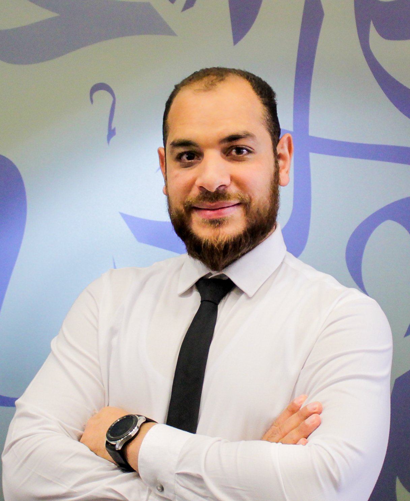
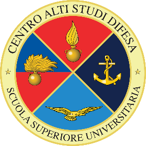

Team
Politecnico di Torino — SMILIES group
Prof. Alessandro Savino
Professore associato presso il Dipartimento di Automatica e Informatica del Politecnico di Torino e vicedirettore del gruppo SMILIES. Si occupa di affidabilità e sicurezza hardware/software per sistemi safety-critical, di approximate computing e di sustainable computing.
Dr. Luca Mannella
Ricercatore post-doc presso il Dipartimento di Automatica e Informatica del Politecnico di Torino. Si occupa di cybersecurity, IoT e software engineering, con focus sulla sicurezza degli smart home gateway e delle piattaforme domestiche connesse.

Tamer Ahmed Eltaras
Ricercatore presso il Dipartimento di Automatica e Informatica del Politecnico di Torino. Si occupa di cybersecurity e privacy nell'AI, con particolare attenzione a gradient inversion attacks (R-CONV / R-CONV++) e classificazione AI di attacchi avversariali e corruzioni hardware nel contesto split computing. Ha inoltre contribuito a studi su federated learning e privacy-preserving aggregation.
Università degli Studi di Catania
Prof. Maurizio Palesi
Professore ordinario presso l'Università di Catania (DIEEI). Si occupa di progettazione e ottimizzazione di architetture di calcolo avanzate, in particolare multi-core e Network-on-Chip, con attenzione a prestazioni ed efficienza energetica.
Elio Vinciguerra
Ricercatore presso l'Università di Catania (DIEEI). Si occupa di architetture e strumenti per valutare affidabilità e sicurezza, incluse tecniche di fault injection (es. su gem5) e metodi per architetture emergenti.
Centro Alti Studi per la Difesa (CASD)
Prof. Alessio Merlo

Professore ordinario presso il CASD. Si occupa di cybersecurity con un forte focus su mobile security (Android): analisi statica e dinamica, testing e tecniche di protezione. Ha guidato per anni un gruppo di ricerca in Mobile Security all'Università di Genova.